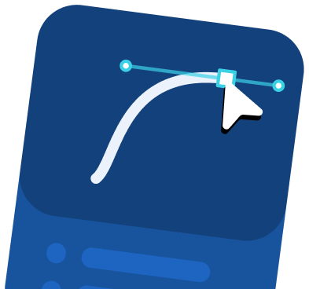
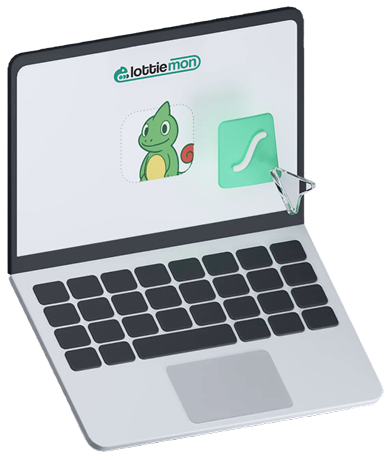
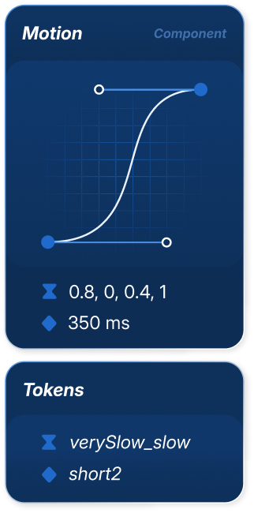
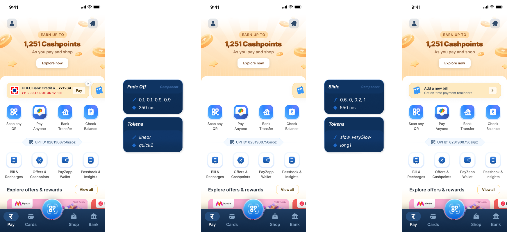
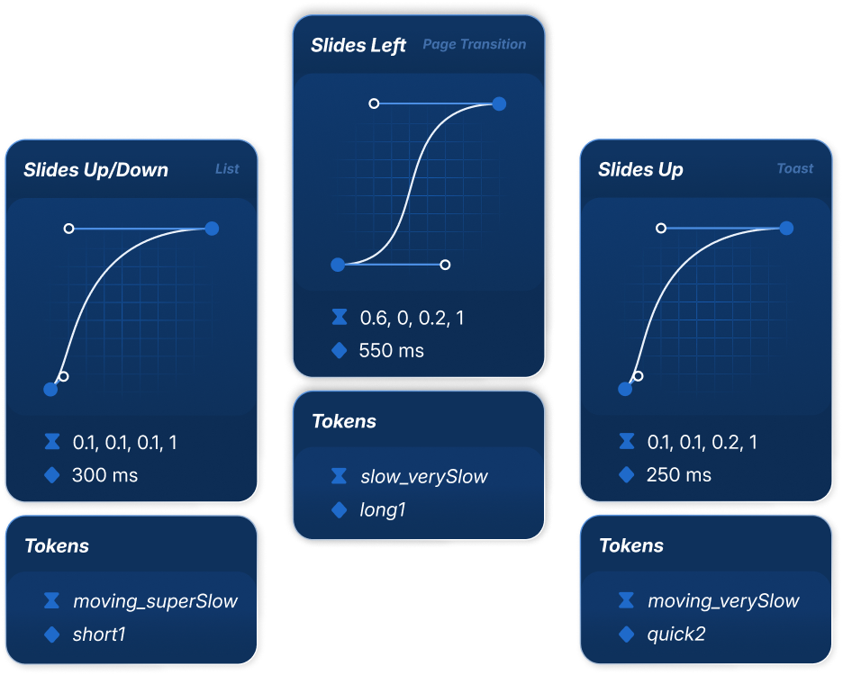
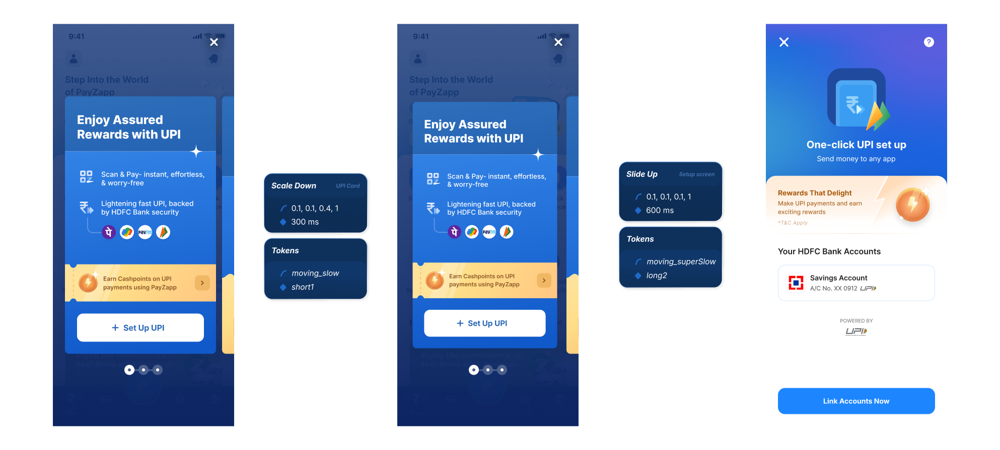
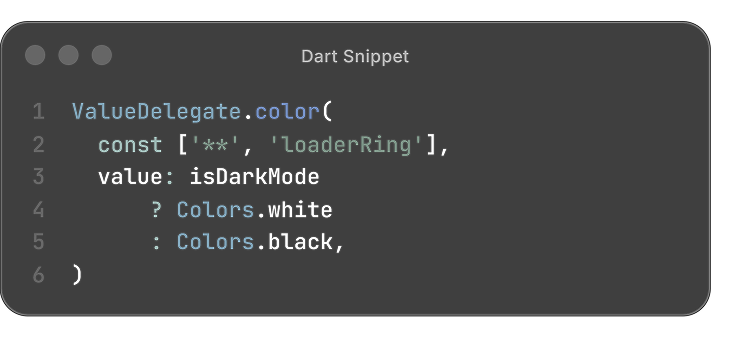
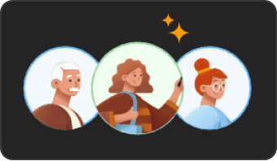
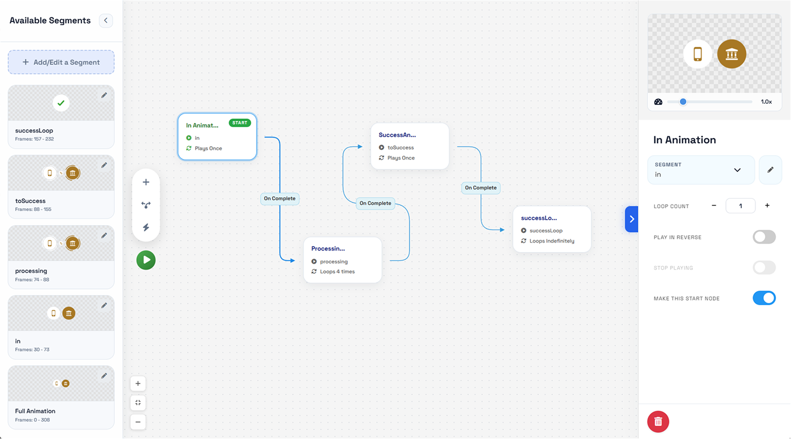

Scaling motion beyond
individual expertise
As PayZapp grew, motion became harder to manage consistently and reliably across the team.
Two Initiatives
Over time, I took on two separate initiatives to address different parts of that problem.
Motion Design Guidelines lived inside Unicorn, the product’s design system. Lottiemon did not; it was an internal tool. I was the only designer on both, though very little was settled alone: the tokens, the cards and the interactions were all shaped through review with design and engineering.


Motion Design Guidelines
Initiative 01
The first initiative was Motion Design Guidelines.
Motion Design Guidelines documented the purpose of motion design across the product and standardized the fundamentals so they could work consistently across different UI frameworks.
At the time, the product was being built across React Native, Jetpack Compose and SwiftUI, with an eventual goal of migrating to Flutter. The fundamental motion tokens were framework-agnostic, so the guidelines could travel across implementations without belonging to a single framework.
1 /The purpose of motion
It documented the purpose of motion design across the product.
focus
intuitiveness
retention
delight
This gave teams a common foundation for evaluating motion based on its purpose rather than personal preference.
2 /Standardising only the fundamentals
The guidelines standardized only the fundamental motion tokens—easing and duration—so they could create consistency without prescribing implementation details.
Because the tokens were framework-agnostic, they could be used across React Native, Jetpack Compose and SwiftUI, with the eventual migration to Flutter in mind.
The framework-agnostic tokens streamlined implementation across teams while keeping motion behaviour consistent.
Motion Cards
To make motion specifications easier to communicate, I introduced a new artifact, and we called it a Motion Card.
What a motion card captures and how we used it
A motion card captured the key details of the motion: the component it was for, the type of motion, and the two standardized parameters: easing and duration.

I turned the Motion Cards into published Figma components, so designers could find them directly in the Assets panel, drag one onto the canvas, customize the specification, and place it alongside the interaction they were describing.

We placed the card right next to, or in between, the two frames where the interaction happened. The example below is for dismissing an attention nudge on the home page.
That meant any of us, designer or developer, could look at the frames and read exactly what the interaction was asking for. And the prototype was always there to play if you wanted to watch it happen.

A fixed set to choose from
Neither easing nor duration was open-ended. Easing came from 13 presets, each named for the speed it starts at and the speed it settles into, and duration came from a short scale of named steps. Enough range to cover what the product actually needed, small enough to stay memorable.
The curve took the most prominent place on the card because it is also how easing is written in most frameworks, so reading one became a habit rather than a lookup.

Motion Card Plugin
The Figma API did not allow prototype connections with preset easings, so I built a plugin that acted as a floating library, exposing all the existing easing and duration presets while you created interactions in Figma’s prototype mode.
You could scroll through the presets and instantly copy the cubic-bezier coordinates to apply directly to a prototype. It was a non-invasive layer of guidance: always available while designing, but never in the way, helping interactions stay within the shared guidelines.
Interactions - Applied & Documented Motion Cards
An interaction card was a Motion Card with four values pre-filled for a specific component: the component, type of motion, easing, and duration.
That gave us a consistent way to describe an interaction across the product without asking engineering to infer the behavior from the screens alone.

Once filled in, the card could sit next to the frames it described, giving designers and developers the intended behavior in context.

Embedded explanations
We documented the fundamental interactions that covered roughly 80% of the interaction cases for the existing components in our design systems.
Each interaction card also had an Explained variant: a lo-fi visual demonstration of how the interaction should behave, plus a plain-language explanation of what moves and how to communicate it to engineering.

Off the screen entirely
We also printed the interaction cards. And I documented every interaction in one place inside Figma, so the whole set stayed easy to reach, even from a phone, via the QR code on the back of each card.


Motion Asset Handoff: Lottiemon
Initiative 02The second initiative focused on how motion assets were handed off and maintained. For that I built Lottiemon, an internal tool to make working with Lottie animations more self-serve and reduce the handoff loops with engineering.

Almost all the motion we shipped was delivered as Lottie animations: loaders and spinners, success and failure states, empty states, hero illustrations. That made the Lottie file the real unit of handoff between design and engineering, so anything that made a Lottie awkward to work with slowed down everything downstream.
Lottiemon does not create animations. You still build them in After Effects, or a tool like LottieLab, or get them from a motion designer. Lottiemon is where you edit that file afterwards and turn it into something deliverable, and that is the part it makes faster.
To standardize the motion asset handoff, Lottiemon handled three main things for us:
1 /Making colours and text addressable
A Lottie is just JSON, and a fairly readable one. Lottie already lets you target parts of an animation by layer name. What was missing was a way for designers to use that without hand-editing the file.
So Lottiemon lets you rename the layers behind solid colours, gradients and text. Once a layer has a name, a designer can change it in the tool, and engineering can reach the same layer from code.
That took the rework out of small changes, and cut the files we handed over. A loader that needed a light and a dark version used to ship as two; now it is one file, with the theme applied at runtime.

2 /Named segments instead of frame ranges
The other problem was stateful animations. An intro, a processing loop and a success state usually went out as three separate files, swapped in code as the process moved along.
Lottie supports markers for exactly this. Lottiemon put a visual editor on top of them, so a designer could set each range by eye and name it, instead of counting frames.
The developer then asks for the state they want, processing or success, and never touches a frame range.
One file instead of three also meant one export, artwork shared across the states, and less to load at runtime.

3 /Handing off before the art is final
The other problem was that motion often had to move into development before the final assets were ready. I added asset replacement so we could hand off the animation with placeholders and swap in the final assets later without rebuilding the animation.
That was particularly useful for marketing and feature-specific animations, where the structure stayed the same but the artwork changed.

Two smaller utilities
Two smaller things came out of recurring friction. A Flutter preview, since the product was moving to Flutter and Lottie sometimes behaved differently there. Better caught before handoff than after.
And a DotLottie export, so moving to the more efficient open format didn’t mean adopting a second workflow.
Experimenting with State Machines
dotLottie also added state machines, letting the animation carry its own transitions. I built an editor for it in Lottiemon, because it would hand designers more control without a trip back to engineering.
We did not adopt it in the app, since behaviour was inconsistent across platforms. It still holds up on the web though, where hover and click states can drive an animation directly, which suits marketing pieces well.

Impact
From the start, one of my core aims was to make motion easier to understand and more approachable: how we wanted to use it, what it stood for, and how to begin working with motion design.
Within a few months, Motion Design Guidelines and Lottiemon had made that practical. Almost all of us were creating our own assets and interactions and handling requirements end to end, with a motion designer stepping in only when something was especially complex or niche.
The referral animation is one Lottie file doing all three: named segments, artwork swapped in at runtime, and colours set at runtime.
An envelope opens with the invite, and four share options sit beneath it. The tap targets are coded over the animation, so which segment plays follows whichever one you pick.
Read more about Lottiemon